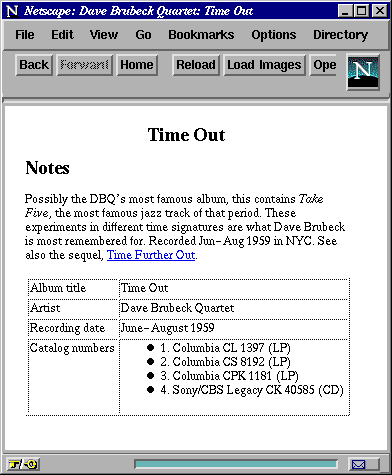

Haskell and XML: Generic Combinators or Type-Based Translation?
Malcolm Wallace and Colin Runciman
Abstract: We present two complementary approaches to writing XML
document-processing applications in a functional language.
In the first approach, the generic tree structure of XML documents is
used as the basis for the design of a library of combinators for generic
processing: selection, generation, and transformation of XML trees.
The second approach is to use a type-translation framework for
treating XML document type definitions (DTDs) as declarations of algebraic
data types, and a derivation of the corresponding functions for reading
and writing documents as typed values in Haskell.
Published in the Proceedings of the International Conference
on Functional Programming, Paris, Sept 1999. ACM Copyright.
1 Introduction
1.1 Document markup languages
XML (Extensible Markup Language) [1] is a recent simplification
of the older SGML (Standardised Generalised Markup Language) standard
that is widely used in the publishing industry. It is a markup
language, meaning that it adds structural information around the text
of a document. It is extensible, meaning that the vocabulary of the
markup is not fixed -- each document can contain or reference a
meta-document, called a DTD (Document Type Definition), which describes
the particular markup capabilities used.
The use of XML is not however restricted to the traditional idea of a
document. Many organisations are proposing to use XML as an interchange
format for pure data produced by applications like graph-plotters,
spreadsheets, and relational databases.
HTML (Hyper-Text Markup Language) is one well-known example of an
instance of SGML -- every HTML document is an SGML document conforming
to a particular DTD. Where XML improves over SGML is in removing
shorthand forms that require an application to have knowledge of a
document's DTD. For instance, in HTML some markup (such as a numbered
list) requires an end marker; other forms (such as paragraphs) have
implicit end markers understood when the next similar form starts; and
yet other markup (such as in-line images) is self-contained and needs
no end marker. An HTML application needs to be aware of the specific
kind of markup in order to do the right thing.
1.2 XML document structure
XML is more regular. All markup has an explicit end marker
without exception: every document is well-formed; its nesting
structure is syntactically clear. One important consequence is that
an XML application does not need to know the meaning or interpretation
of all markup expressions -- parts of the document can be selected,
re-arranged, transformed, by structure alone rather than by meaning.
An XML document is essentially a tree structure.
There are two basic `types' of content in a document: tagged elements,
and plain text. A tagged element consists of a start tag and an end
tag, which may enclose any sequence of other content (elements or text
fragments). Tagged elements can be nested to any depth, and the
document is well-formed if it consists of a single top-level element
containing other properly nested elements.
Start tags have the syntax <tag>, and end tags </tag>,
where tag is an arbitrary name. There is special syntax for an
empty element: <tag/> is exactly equivalent to
<tag></tag>.
The start and end tags for each element contain a tag name, which
identifies semantic information about the structure, indicating how the
enclosed content should be interpreted. The start tag may also contain
attributes, which are simple name/value bindings, providing further
information about the element.
Figure 1 shows an example XML document, illustrating
all these components.
<?xml version='1.0'?>
<!DOCTYPE album SYSTEM "album.dtd">
<album>
<title>Time Out</title>
<artist>Dave Brubeck Quartet</artist>
<coverart style='abstract'>
<location thumbnail='pix/small/timeout.jpg'
fullsize='pix/covers/timeout.jpg'/>
</coverart>
<catalogno label='Columbia' number='CL 1397'
format='LP'/>
<catalogno label='Columbia' number='CS 8192'
format='LP'/>
<catalogno label='Columbia' number='CPK 1181'
format='LP' country='Korea'/>
<catalogno label='Sony/CBS' number='Legacy CK 40585'
format='CD'/>
<personnel>
<player name='Dave Brubeck' instrument='piano'/>
<player name='Paul Desmond' instrument='alto sax'/>
<player name='Eugene Wright' instrument='bass'/>
<player name='Joe Morello' instrument='drums'/>
</personnel>
<tracks>
<track title='Blue Rondo à la Turk'
credit='Brubeck' timing='6m42s'/>
<track title='Strange Meadow Lark'
credit='Brubeck' timing='7m20s' />
<track title='Take Five'
credit='Desmond' timing='5m24s' />
<track title='Three To Get Ready'
credit='Brubeck' timing='5m21s' />
<track title="Kathy's Waltz"
credit='Brubeck' timing='4m48s' />
<track title="Everybody's Jumpin'"
credit='Brubeck' timing='4m22s' />
<track title='Pick Up Sticks'
credit='Brubeck' timing='4m16s' />
</tracks>
<notes author="unknown">
Possibly the DBQ's most famous album,
this contains
<trackref link='#3'>Take Five</trackref>,
the most famous jazz track of that period.
These experiments in different time
signatures are what Dave Brubeck is most
remembered for. Recorded Jun-Aug 1959
in NYC. See also the sequel,
<albumref link='cbs-timefurthout'>
Time Further Out</albumref>.
</notes>
</album>
Figure 1: An example XML document.
1.3 Representing XML in Haskell
This paper is about processing XML using the functional
language Haskell.1
Modern functional languages are well-equipped to deal
with tree-structured data, so one expects the
language to be a good fit for the application.
Even so, a key issue is just how to represent documents, and in
particular how to reconcile the DTD datatype definitions
included in XML documents with the data types that can be
defined in Haskell.
We have investigated two complementary approaches:
- (1)
Define an internal data structure that represents contents
of any XML document, independent of all DTDs.
- (2)
Given the DTD for some XML documents of interest, systematically
derive definitions for internal Haskell data types to represent them.
These definitions are closely based on the specific DTD.
Advantages of (1) include genericity and function-level scripting.
Generic applications handle a wide class of XML documents, not just
those sharing a specific DTD.
One example of a completely generic application is searching documents
to extract contents matching some pattern.
Our Xtract2
is
an interpreter for a regular XML query language.
The term `generic' also applies to applications that make some
assumptions about a document's structure but need not know the full
DTD,3
for example, a small script to add a ``total'' column to the end of every
table (recognised by a particular markup tag) without altering any of
the surrounding structure.
By function-level scripting we mean that the programmer does not have
to be concerned with details of programming over data structures.
All details of data structure manipulation can be hidden in a library of
high-level combinators. In effect, combinatory expressions serve as
an extensible domain-specific language.
Advantages of (2) include stronger typing and fuller control.
A well-formed XML document is further said to be valid if it
conforms to a stated DTD. By establishing a correspondence between
DTDs and Haskell types, the concept of validity can be extended to
include applications that process documents.
Not only is there a static guarantee that applications cannot fail
in respect of
document structure if the input XML conforms to the stated DTD;
any XML output produced via a DTD-derived type is guaranteed to be valid.
With direct access to the DTD-specific data structure, the programmer has
fuller control over how computation is done.
They can use a full repertoire of programming techniques with the safeguard
that type-checked Haskell will automatically produce XML that is valid
in respect of a specified DTD.
Both approaches rely on a toolkit of more basic components for processing
XML documents in Haskell: for instance, a parser and pretty-printer.
These supporting components are implemented using existing combinator
libraries [7, 8].
1.4 Sections following
§2 develops the approach using a generic representation
and a combinator library, including an illustrative application.
§3 develops the alternative based on translation between
DTDs and Haskell data types.
§4 discusses some pros and cons of the two approaches
based on our experience implementing and using both.
§5 discusses related work; §6 offers some
conclusions and suggestions for further work.
2 Generic combinators
In this section, we begin with a generic representation for the contents
of XML documents, excluding any DTD. We introduce content filters
as a suitable basic type for functions processing this representation,
and combinators for putting such filters together.
A complete table of basic
filters is given in Figure 2, and of combinators and
their definitions in Figure 3. An example program
is shown in Figure 4.
One expected property of a fitting set of combinators is that they
satisfy algebraic laws; a table of laws satisfied by our combinators
is given in Figure 6.
2.1 Documents and transformations
Data modelling
data Element = Elem Name [Attribute] [Content]
data Content = CElem Element
| CText String
Because functional languages are good at processing tree-structured data,
there is a natural fit between the XML document domain and Haskell tree
datatypes. In simplified form, the main datatypes which model an XML
document are Element and Content, whose definitions are
mutually recursive, together forming a multi-branch tree structure.
The filter type
type CFilter = Content -> [Content]
Our basic type for all document processing functions is the content
filter, which takes a fragment of the content of an XML document
(whether that be some text, or a complete tagged element), and
returns some sequence of content. The result list might be empty, it
might contain a single item, or it could contain a large collection of
items.
Some filters are used to select parts of the input document, and others
are used to construct parts of the output document. They all share the
same basic type, because when building a new document, the intention is
to re-use or extract information from parts of the old document. Where
the result of a filter is either empty or a singleton, the filter can
sometimes be thought of as a predicate, deciding whether or not to
keep its input.
Program wrapper
processXmlWith :: CFilter -> IO ()
We assume a top-level wrapper function, which gets command-line
arguments, parses an XML file into the Content type, applies a
filter, and pretty-prints the output document. The given filter is
applied to the top-level enclosing element of the document.
Basic filters
A complete list of predefined filters is shown in Figure 2.
The simplest possible filters: none takes
any content and returns nothing; keep takes any content and
returns just that item. Algebraically, these are the zero and unit filters.
| Predicates |
| |
none, |
|
zero/failure |
| |
keep, |
|
identity/success |
| |
elm, |
|
tagged element? |
| |
txt |
|
plain text? |
| |
|
:: CFilter |
| |
tag, |
|
named element? |
| |
attr |
|
element has attribute? |
| |
|
:: String -> CFilter |
| |
attrval |
|
element has attribute/value? |
| |
|
:: (String,String) -> CFilter |
| |
| Selection |
| |
children |
|
children of element |
| |
|
:: CFilter |
| |
showAttr, |
|
value of attribute |
| |
(?) |
|
synonym for showAttr |
| |
|
:: String -> CFilter |
| |
| Construction |
| |
literal, |
|
build plain text |
| |
(!) |
|
synonym for literal |
| |
|
:: String -> CFilter |
| |
mkElem |
|
build element |
| |
|
:: String -> [CFilter] -> CFilter |
| |
mkElemAttrs |
|
build element with attributes |
| |
|
:: String -> [(String,CFilter)] |
| |
|
-> [CFilter] -> CFilter |
| |
replaceTag |
|
replace element's tag |
| |
|
:: String -> CFilter |
| |
replaceAttrs |
|
replace element's attributes |
| |
|
:: [(String,CFilter)] -> CFilter |
Figure 2: Basic content filters.
-
Predicate and selection filters. The filter elm is a
predicate, returning just this item if it is an element, or nothing
otherwise.4
Conversely, txt returns this item only if is plain
text,5
and nothing otherwise. The filter
children returns the immediate children of an element if it has
any, or nothing if this content-item is not an element. The filter
tag t returns this item only if it is an element whose tag name
is the string t. The filter attr a returns this item only
if it is an element containing the attribute name a. The filter
attrval (a,v) returns this item only if is an element containing
the attribute a with the value v.
-
Construction filters. The function literal s
makes a text content containing just the string s. The function
mkElem t fs builds a content element with the tag t; the
argument fs is a list of filters, each of which is applied
to the current item, and all their results are collected to become
the children of the new element. The function mkElemAttrs t avs fs
is just like mkElem except that its extra parameter avs
is a list of attribute values6
to be attached to the tag.
A useful filter which involves both selection and construction is showAttr a, which extracts the value of the attribute a from the
current element and returns just that string as a piece of content.
When constructing a new document (e.g. the script in Figure
4 which generates HTML), the mkElem function
occurs repeatedly. We define and use a small library of functions such
as htable, hrow, and hcol which are just synonyms for
particular applications of mkElem and mkElemAttrs to
different tagnames, reducing verbosity and making the syntax rather more
readable.
Also for convenience, we define the new operators ? and ! as
synonyms for showAttr and literal respectively: they are
used in a bracketed postfix notation,7
a style some programmers prefer.
2.2 Combinators
The combinators used as intermediate code in compilers
can render programs `totally unfit for human consumption' [11]!
However, the idea of a combinator library for a specific class of applications
is to achieve a form of expression that is natural for the problem.
A combinator library should be like a language extension
tailored to the problem domain [4].
In this
sense, functional languages are extensible, just as XML itself is
extensible.
The combinators are higher-order operators serving as `glue'[6]
to assemble functions into more powerful combinations.
We aim to keep the types of component functions as uniform as possible
so that any function can be composed with any other.
Within the lexical limits of the host language, choice of notation
should follow application conventions:
in Haskell we can, where appropriate, define new infix operator symbols
for combinators.
So, having defined some basic filters already, in what ways can these usefully
be combined into more interesting and complex filters?
(See Figure 3.)
| |
o, |
|
Irish composition |
| |
(|||), |
|
append results |
| |
with, |
|
guard |
| |
without, |
|
negative guard |
| |
(/>), |
|
interior search |
| |
(</), |
|
exterior search |
| |
(|>|) |
|
directed choice |
| |
|
:: CFilter -> CFilter -> CFilter |
| |
| |
f `o` g = concat . map f . g |
| |
f ||| g = \c-> f c ++ g c |
| |
f `with` g = filter (not.null.g) . f |
| |
f `without` g = filter (null.g) . f |
| |
f /> g = g `o` children `o` f |
| |
f </ g = f `with` (g `o` children) |
| |
f |>| g = f ?> f :> g |
| |
| |
cat |
|
concatenate results |
| |
|
:: [CFilter] -> CFilter |
| |
| |
cat fs = \c-> concat. map (\f->f c) fs |
| |
| |
et |
|
disjoint union |
| |
|
:: (String->CFilter) -> CFilter -> CFilter |
| |
| |
f `et` g = (f `oo` tagged elm) |
| |
|>| (g `o` txt) |
| |
| |
(?>) |
|
if-then-else choice |
| |
|
:: CFilter -> ThenElse CFilter -> CFilter |
| |
| |
data ThenElse a = a :> a |
| |
p ?> f :> g = \c-> if (not.null.p) c |
| |
then f c else g c |
| |
| |
chip, |
|
``in-place'' application to children |
| |
deep, |
|
recursive search (topmost) |
| |
deepest, |
|
recursive search (deepest) |
| |
multi, |
|
recursive search (all) |
| |
foldXml |
|
recursive application |
| |
|
:: CFilter -> CFilter |
| |
| |
deep f = f |>| (deep f `o` children) |
| |
deepest f = (deepest f `o` children) |>| f |
| |
multi f = f ||| (multi f `o` children) |
| |
foldXml f = f `o` (chip (foldXml f)) |
Figure 3: Filter combinators and their definitions.
The most important and useful filter combinator is `o`.
We call this operator Irish composition, for reasons which should be
obvious. It plugs two filters together: the left filter is applied to
the results of the right filter. So, for instance, the expression
text `o` children `o` tag "title"
means ``only the plain-text children of the current element, provided the
current element has the title tag name''.
Some other combinators are as follows.
f ||| g is an append operator: it joins the results of f and
g sequentially.
cat fs is the list generalisation of |||; it concatenates
the results of each of the filters from the fs list.
f `with` g acts as a guard on the results of f, pruning to
include only those which are productive under g.
The dual, f `without` g, excludes those results of f which
are productive under g.
The expression p ?> f :> g is a functional choice operator; if
the (predicate) filter p is productive, then the filter f
is applied, otherwise g is applied.
From this is derived a directed choice operator: f |>| g gives
either the results of f, or those of g only if f is
unproductive.
Generalised Path Selectors
Selection of subtrees by path patterns is familiar to users of
the Unix file-system, where such patterns are used to access directory
structure, using a / notation to indicate the `containing'
relation. Similar patterns are used in XSLT, an XML transformation
language [3]. In this connection, we define two path selection
combinators /> and </. Both combinators choose subtrees
to return based on whether the results of the left filter contain the
results of the right filter as children: /> is an `interior'
selector, returning the inner structure; </ is an `exterior'
selector, returning the outer structure.
An editing combinator
Aside from predicates, selectors, choice, and constructive filters,
there is one very useful combinator which stands in its own category --
an editing combinator. chip f processes the children of an
element in-place: the filter f is applied to its
children; the results are rebuilt as the new children of that
same element.
Recursion
It is often useful to express recursive transformations on XML
documents: transformations which can be applied at many different
levels of the document tree.
One family of such expressions is useful primarily in selecting a
subtree from an arbitrarily deep location, although they can of course
be used for editing and filtering as well as selection. The recursive
combinator deep f potentially pushes the action of filter
f deep inside the document sub-tree. It first tries the given
filter on the current item: if it is productive then it stops here, but
if no results are returned, then it moves to the children and tries
again recursively. When used with a predicate, this strategy searches
for the topmost matching elements in the tree. There are variations:
deepest searches for the bottommost matching elements; multi returns all matches, even those which are sub-trees of other
matches. However, as already noted, the action of these combinators is
not restricted to predicates or selectors.
Another powerful recursion combinator is foldXml: the expression
foldXml f applies the filter f to every level of the tree,
from the leaves upwards to the root (at least conceptually -- of course
lazy evaluation makes this more efficient).
2.3 Example
The use of these filters and combinators is illustrated in an example
script in Figure 4. This program transforms an
<album> element into an HTML document that provides a formatted
summary. The HTML output, rendered by the Netscape browser, is
illustrated in Figure 5. Such a task might be fairly
common in e-commerce applications.
We now describe some of the salient features of the example.
(albumf `o` deep (tag "album"))
The script first searches recursively for the topmost element tagged
<album>, before applying the filter albumf to it. Thus, it works
equally well with any XML source document that contains an <album>
element anywhere within it, and (correctly) produces no output for
documents which do not contain album data.
The output document's <HEAD> section contains the artist name and
album title separated by a colon. We note that the expression,
txt `o` children `o` tag "artist"
`o` children `o` tag "album"
which grabs the textual content of the <artist> element within the
<album> element, is somewhat unwieldy. Moreover its trailing test
for the <album> tag is redundant, since the calling filter has
already performed that match. The expression can be simplified by
using path selectors to:
keep /> tag "artist" /> txt
and this style is used elsewhere in the example. (The
algebraic laws in Section 2.5 guarantee that this rewriting
is safe.)
Such expressions make some assumptions about the structure of the data
within the <album> element. In this instance, the assumption is
that an <artist> element is an immediate child,
and that its immediate children include text. If such
assumptions prove incorrect for a particular document, the filter
is simply unproductive; no error is flagged.
With a suitable definition, hbody = mkElemAttr "BODY"
the expression
hbody [("bgcolor",("white"!))] [...]
can be understood to set the background colour attribute of
the <BODY> tag to the literal value white. Notice how the
attribute value is itself described by a filter. In this case, the
filter is not very exciting, but the later definition of
mkLink illustrates the generation of an HTML reference
by looking up the value of a supplied link attribute (using the
? filter).
When the script is used on the particular document from Figure
1, the output is a re-ordering of the internal
components of the input: in the <BODY> part of the output, the
<notes> section is selected and transformed by notesf before
the <catalogno> elements are processed by the summaryf filter.
Although in the absence of a DTD it is impossible to be sure of any
input ordering, the script here ensures that the output ordering is
consistent.
The definition of the notesf filter is interesting because it
makes fewer assumptions about the content of a <notes> structure, and
in addition it preserves the input ordering.
The chained if-then-else choice within the recursive foldXml
combinator causes all internal structure of the <notes> element to be
retained except for the replacement of <trackref>s by emphasised
text, and <albumref>s by HTML links.
One of the most striking features of the example as a whole is how
selection and testing of old content and construction of new content are
uniform, and can be combined almost interchangeably.
We will return to the treatment of <catalogno> elements in Section
2.4 after introducing some extra labelling combinators.
module Main where
import Xml
main =
processXmlWith (albumf `o` deep (tag "album"))
albumf =
html
[ hhead
[ htitle
[ txt `o` children `o` tag "artist"
`o` children `o` tag "album"
, literal ": "
, keep /> tag "title" /> txt
]
]
, hbody [("bgcolor",("white"!))]
[ hcenter
[ h1 [ keep /> tag "title" /> txt ] ]
, h2 [ ("Notes"!) ]
, hpara [ notesf `o` (keep /> tag "notes") ]
, summaryf
]
]
notesf =
foldXml (txt ?> keep :>
tag "trackref" ?> replaceTag "EM" :>
tag "albumref" ?> mkLink :>
children)
summaryf =
htable [("BORDER",("1"!))]
[ hrow [ hcol [ ("Album title"!) ]
, hcol [ keep /> tag "title" /> txt ]
]
, hrow [ hcol [ ("Artist"!) ]
, hcol [ keep /> tag "artist" /> txt ]
]
, hrow [ hcol [ ("Recording date"!) ]
, hcol [ keep />
tag "recordingdate" /> txt ]
]
, hrow [ hcola [ ("VALIGN",("top"!)) ]
[ ("Catalog numbers"!) ]
, hcol
[ hlist
[ catno `oo`
numbered (deep (tag "catalogno"))
]
]
]
]
catno n =
mkElem "LI"
[ ((show n++". ")!), ("label"?), ("number"?)
, (" ("!), ("format"?), (")"!) ]
mkLink =
mkElemAttr "A" [ ("HREF",("link"?)) ]
[ children ]
Figure 4: An example document-processing script using the generic filter
combinators.

Figure 5: The HTML results of the example script, rendered by a browser.
2.4 Labellings
One feature that is occasionally useful is the ability to attach labels
to items in a sequence, for instance, to number a list of items, or to
treat the first/last item of a list differently from the other items.
For this purpose, the library provides special labelling combinators.
We choose to introduce a new type:
type LabelFilter a = Content -> [ (a,Content) ]
A LabelFilter is like a CFilter except it attaches a label
to each of its results. We might have chosen to fold label
values inside the Content type, to yield a uniform CFilter
type, but keeping the labels separate allows them to be of
completely polymorphic type: a label could even be another filter
for example.
There are several common labelling functions:
numbered :: CFilter -> LabelFilter Int
interspersed :: a -> CFilter -> a
-> LabelFilter a
tagged :: CFilter -> LabelFilter String
attributed :: CFilter ->
LabelFilter [(String,String)]
These labelling functions lift a CFilter to the LabelFilter type:
numbered f transforms the ordinary filter f
into a new filter that attaches integers (from 1 upwards)
to the results of f;
interspersed a f z attaches the label a to all of the
results of f except the last, which gets the label z;
tagged f labels every tagged element with its tag name (and
non-elements with the empty string); attributed f
labels every tagged element with its attribute/value pairs (and
non-elements with the empty list).
`oo` :: (a->CFilter) -> LabelFilter a -> CFilter
The combinator `oo` is a new form of composition which drops a
LabelFilter back to the CFilter type by application of
another filter that consumes the label.
The use of this form of labelling is illustrated by the treatment of
<catalogno>s in the example of Figure 4:
catno `oo` numbered (deep (tag "catalogno"))
First, the desired elements are extracted from their topmost positions
in the tree, then they are given numeric labels, and finally the
catno filter incorporates the label into some generated text.
Another example can be seen in the definition of the `et`
combinator in Figure 3.
(`et` combines a filter f on elements with a filter g
on text. f pattern-matches against tagnames --
the tagnames are extracted by the labelling function tagged.)
Furthermore, it is possible to combine labellings. The `x`
combinator glues two labelling functions together, pairing the
labels they produce.
`x` :: (CFilter->LabelFilter a)
-> (CFilter->LabelFilter b)
-> (CFilter->LabelFilter (a,b))
2.5 Algebraic laws of combinators
We briefly show how combinators are defined in such a way that
various algebraic laws hold. The complete set of laws is given in
Figure 6.
| |
Irish composition |
f `o` (g `o` h) = (f `o` g) `o` h |
|
associativity |
none `o` f = f `o` none = none |
|
zero |
keep `o` f = f `o` keep = f |
|
identity |
| |
| |
Guards |
f `with` keep = f |
|
identity |
f `with` none = none `with` f = none |
|
zero |
(f `with` g) `with` g = f `with` g |
|
idempotence |
(f `with` g) `with` h |
= (f `with` h) `with` g |
|
promotion |
(f `o` g) `with` h |
= (f `with` h) `o` g |
|
promotion |
| |
f `without` keep = none `without` f |
= none |
|
zero |
f `without` none = keep |
|
identity |
(f `without` g) `without` g |
= f `without` g |
|
idempotence |
(f `without` g) `without` h |
= (f `without` h) `without` g |
|
promotion |
(f `o` g) `without` h |
= (f `without` h) `o` g |
|
promotion |
| |
| |
Path selectors |
f /> (g /> h) = (f /> g) /> h |
|
associativity |
none /> f = f /> none = none |
|
zero |
keep /> f = f `o` children |
|
|
f /> keep = children `o` f |
|
|
keep /> keep = children |
|
|
none </ f = f </ none = none |
|
zero |
f </ keep = f `with` children |
|
|
(f </ g) </ g = f </ g |
|
idempotence |
(f </ g) /> g = f /> g |
|
idempotence |
| |
(f /> g) </ h = f /> (g </ h) |
|
promotion |
(f </ g) </ h = (f </ h) </ g |
|
promotion |
f `o` (g /> h) = g /> (f `o` h) |
|
promotion |
(f /> g) `o` h = (f `o` h) /> g |
|
promotion |
(f /> g) `with` h = f /> (g `with` h) |
|
promotion |
(f </ g) `with` h = (f `with` h) </ g |
|
promotion |
| |
| |
Directed choice |
(f |>| g) |>| h = f |>| (g |>| h) |
|
associativity |
keep |>| f = keep |
|
|
none |>| f = f |>| none = f |
|
identity |
f |>| f = f |
|
idempotence |
| |
| |
Recursion |
deep keep = keep |
|
simplification |
deep none = none |
|
simplification |
deep children = children |
|
simplification |
deep (deep f) = deep f |
|
depth law |
| |
| |
Misc |
elm |>| txt = txt |>| elm = keep |
|
completeness |
elm `o` txt = txt `o` elm = none |
|
excl. middle |
children `o` elm = children |
|
|
children `o` txt = none |
|
|
Figure 6: Algebraic laws of combinators.
Giving all content filters the same type maximises the usefulness of
combinators for plugging together functions of this type. However, it
is still helpful to identify subclasses of content filters that offer
extra guarantees. Two examples of such classes are:
-
A predicate p has the property that p c
always gives as result either [c] or [].
-
A selector s has the property that s c
always gives as result a sequence of contents taken from
c.
Resulting items do not overlap, and
the result sequence respects the order in which the contents
were found in c.
So a predicate is a selector, but a selector is not necessarily
a predicate.
The `o` form of filter composition
could be defined using a Haskell list comprehension
(f `o` g) c = [c'' | c' <- g c, c'' <- f c']
However, we prefer the equivalent higher-order definition
f `o` g = concat . map f . g
because it is more convenient in algebraic
calculation.8
Composition is associative, with none as zero, and keep as
identity.
The `with` form of guarded composition is not associative,
but we do have some laws, particularly idempotence. We also have a
promotion law about combined uses of `with` and `o`.
The dual operator, `without` has parallel laws.
The /> path selector is associative but </ is not, and there
are some idempotence laws for both. Most important however, are the
various promotion laws for changing the order of application of />,
</, and with.
The directed choice operator |>| viewed by itself appears to be
algebraically sensible, but it does not seem to have useful algebraic
properties in connection with other combinators because of its bias
towards the left operand. The simpler result-appending combinator ||| could be an alternative to the directed choice operator, and would
probably lead to more laws, but it has less `application bite'. A
potentially serious problem is that the |||-combination of two
selectors is not necessarily a selector.
The recursion operator deep has some minor laws, one of which,
the depth law, is more profound. We have not yet fully investigated
the properties of deepest, multi, and foldXml.
3 Translation of DTDs to Types
3.1 DTDs
So far we have considered document-processing by generic tree
transformations, where markup is matched textually at runtime, and
no account is taken of any deeper meaning of tags.
However, when the DTD for a document is available, the meaning it
defines for markup tags can be used to powerful effect. The most basic
use is to confirm semantic validity: a stronger notion than mere
syntactic well-formedness. A DTD defines a grammar for document
content: it specifies a vocabulary of markup tags, and the allowed
content and attributes for each tag. Document validation is therefore a
straightforward check that the document's structure conforms to the
vocabulary and grammar given in the DTD.
XML document validators are readily available. However, we go further
and define the idea of valid document processing. A valid
processing script is one which produces a valid document as output,
given a valid document as input. We achieve this by demonstrating a
correspondence
between the DTD of a document and the
definition of a set of algebraic types in Haskell, and the consequent
correspondence between the document's content and a structured Haskell
value. Hence, by writing document processing scripts to manipulate the
typed Haskell value, the script validation problem is just an instance
of normal Haskell type inference.9
<?xml version='1.0'?>
<!DOCTYPE album SYSTEM "album.dtd" [
<!ELEMENT album (title, artist, recordingdate?,
coverart, (catalogno)+,
personnel, tracks, notes) >
<!ELEMENT title #PCDATA>
<!ELEMENT artist #PCDATA>
<!ELEMENT recordingdate EMPTY>
<!ATTLIST recordingdate date CDATA #IMPLIED
place CDATA #IMPLIED>
<!ELEMENT coverart (location)? >
<!ATTLIST coverart style CDATA #REQUIRED>
<!ELEMENT location EMPTY >
<!ATTLIST location thumbnail CDATA #IMPLIED
fullsize CDATA #IMPLIED>
<!ELEMENT catalogno EMPTY >
<!ATTLIST
catalogno
label CDATA #REQUIRED
number CDATA #REQUIRED
format (CD | LP | MiniDisc) #IMPLIED
releasedate CDATA #IMPLIED
country CDATA #IMPLIED>
<!ELEMENT personnel (player)+ >
<!ELEMENT player EMPTY >
<!ATTLIST player name CDATA #REQUIRED
instrument CDATA #REQUIRED>
<!ELEMENT tracks (track)* >
<!ELEMENT track EMPTY>
<!ATTLIST track title CDATA #REQUIRED
credit CDATA #IMPLIED
timing CDATA #IMPLIED>
<!ELEMENT notes (#PCDATA | albumref | trackref)* >
<!ATTLIST notes author CDATA #IMPLIED>
<!ELEMENT albumref #PCDATA>
<!ATTLIST albumref link CDATA #REQUIRED>
<!ELEMENT trackref #PCDATA>
<!ATTLIST trackref link CDATA #IMPLIED>
]>
Figure 7: An example DTD.
module AlbumDTD where
data Album =
Album Title Artist (Maybe Recordingdate)
Coverart [Catalogno] Personnel
Tracks Notes
newtype Title = Title String
newtype Artist = Artist String
newtype Recordingdate =
Recordingdate Recordingdate_Attrs
data Recordingdate_Attrs = Recordingdate_Attrs {
date :: Maybe String,
place :: Maybe String }
newtype Coverart = Coverart (String, Maybe Location)
newtype Location = Location Location_Attrs
data Location_Attrs = Location_Attrs {
thumbnail :: Maybe String,
fullsize :: Maybe String }
newtype Catalogno = Catalogno Catalogno_Attrs
data Catalogno_Attrs = Catalogno_Attrs {
label :: String,
number :: String,
format :: Maybe Format,
releasedate :: Maybe String,
country :: Maybe String }
data Format = CD | LP | MiniDisc
newtype Personnel = Personnel [Player]
newtype Player = Player Player_Attrs
data Player_Attrs = Player_Attrs {
name :: String,
instrument :: String }
newtype Tracks = Tracks [Track]
newtype Track = Track Track_Attrs
data Track_Attrs = Track_Attrs {
title :: String,
credit :: Maybe String,
timing :: Maybe String }
newtype Notes = Notes (Maybe String, [Notes_])
data Notes_ =
Notes_Str String
| Notes_Albumref Albumref
| Notes_Trackref Trackref
newtype Albumref = Albumref (String,String)
newtype Trackref = Trackref (Maybe String,String)
Figure 8: The example DTD translated to Haskell types.
3.2 DTD translations.
An example DTD for the document shown earlier is given in
Figure 7. The immediate features to note are:
(1) For every element, there is a specification of allowed inner elements
(ELEMENT declaration), and possibly also a specification of allowed
attribute values (ATTLIST declaration).
(2) For inner content, the grammar allows sequence (commas), choice
(vertical bar), optionality (question mark), and repetition (star or plus).
(3) Where the inner content declaration allows free text (#PCDATA),
choice between text and other elements is permitted, but sequencing of
those elements is not permitted.
(4) In attribute lists, some values are mandatory (#REQUIRED) and
some are optional (#IMPLIED); attribute values can either be
unconstrained strings (CDATA) or a member of some pre-defined
set of string values.
There seem to be some obvious correspondences between this very
restricted form of type language and the richer type language of
Haskell. Each element declaration is roughly speaking a new datatype
declaration. Sequence is like product types (i.e. single-constructor
values). Choice is like sum types (i.e. multi-constructor values).
Optionality is just a Maybe type. Repetition is lists.
Attribute lists also have a translation: because they are unordered and
accessed by name, Haskell named-fields look like a good
representation. Optionality can again be expressed as Maybe
types. Attribute values that are constrained to a particular value-set
can be modelled by defining a new enumeration type encompassing the
permitted strings.
3.3 Implementation
These rules are formalised in the appendix (Figure 9).
An implementation of these rules (with some additional rules to
eliminate redundancy) translated the DTD in Figure 7
into the Haskell type declarations shown in Figure 8.
Also needed, along with the type declarations, are functions which read
and write values of these types to and from actual XML documents.
These are generated automatically from the type declarations alone.
Using an appropriate set of pre-defined type classes, we derive a new
instance for each generated type using a tool like DrIFT [16].
3.4 Discussion
Although this type-based translation looks straightforward, it turns
out that there are several tricky issues.
First, the type translation may only use datatypes and newtypes, never
type synonyms. This is a result of needing to write values out as XML
-- a type synonym in Haskell is indistinguishable from the type it
abbreviates, but the generated types must be distinct in order to be
able to re-introduce enclosing start and end tags with the correct
markup.
A separate type is introduced for each collection of attributes.
Hence, an element is represented by a pairing of the attributes
and the content. Where a tagged element directly contains an optional
type or a sequence of types which are themselves sum-types, it is
necessary to interpose a separate Haskell type, e.g. Notes
contains a [Notes_] where the auxiliary type Notes_ has
three alternatives.
Naming is a big issue. Case matters in XML, so a <tag> differs
from a <TAG> and attribute attr differs from Attr.
In Haskell however, types must begin with upper-case, and field-names
must begin with lower-case. Where auxiliary types are necessary,
we have chosen to append an underscore character to the name. All
of these factors impose restrictions on the use of this
translation, due to the potential name conflicts.
Furthermore, there is a mismatch between Haskell's named fields and the
attribute naming/scoping rules in XML. In XML, different elements may
have attributes of the same name and type, whereas Haskell's named
fields are restricted to use within a single type. A system of typed
extensible records [5] would be a much better fit.
Despite these problems in expressing DTDs within the Haskell
typesystem, the latter is very much more powerful than DTDs -- for
instance, DTDs have no notion of polymorphism. Indeed, there are
frequent occasions when DTD writers resort to textual
macros10
to indicate more
detailed structuring than DTDs permit (including polymorphism and
qualified typing), even though such implicit structuring cannot be
validated by XML tools. It is significant to note the XML community's
recognition of these limitations of DTDs -- recent proposals for schemas11
address the question of richer
typing in a more disciplined manner.
One area in which the type system of Haskell in particular (as opposed
to other functional languages) is exploited is type classes. This
systematic overloading mechanism is very useful for codifying the I/O
conversions.
4 Pros and cons of the two schemes
4.1 Combinators
Compared with the mainstream solution for XML processing,
namely new domain-specific languages for expressing and scripting
transformations, the combinator approach has several advantages:
Ease of extension and variation
Scripting languages sometimes lack useful facilities, or provide
them in convoluted ways. Extending the language is difficult. A
combinator library, however, can be enlarged comparatively
straightforwardly -- the definitions are accessible, and most are
short and simple.
Computational power
Scripting languages tend to offer either a
very limited expression language, or a hook into a programming
system at a completely different level of abstraction. But if XML
scripts are programs in a language such as Haskell, the full power
of the native language is immediately available.
Abstraction, generality and reuse
Almost any pattern occurring in a combinator program can be isolated
and defined as a separate re-usable idea [6]. This also
applies at the application level, where common ideas from similar
applications might easily be defined in a higher-level library.
This form of re-use makes program development much quicker and less
error-prone.
Laws for reasoning about scripts
The semantics of a scripting language are often defined by
illustration. So it is hard to reason with confidence about the
meanings of scripts. Is A just a stylistic variation of B or
are there inputs for which the two could give different results?
But when the semantics of scripts can be defined in terms of the
equations for the combinators, properties such as associativity and
distribution can often be demonstrated simply.
Implementation for free
Does a scripting language have an interactive interpreter? A
compiler? A type-checker? A profiler? All these things are
immediately available to XML scripts directly expressed as Haskell
programs.
Of course, there are disadvantages too.
Distance from target language
XSLT [3] has the property that a script is an expression in
the target language: it uses exactly the XML syntax for
building new content. Combinator-based scripts must
use a different syntax due to the underlying language.
The linguistic gap might cause confusion and increase learning costs.
Living in an unfamiliar world
Combinator programs look like scripts in a small
domain-specific language. Writers may be beguiled by this apparent
simplicity, make a small error, and drop into an unknown corner of
Haskell. Error messages may be incomprehensible, or worse,
the script might work but do something utterly strange.
4.2 Type-based translation
Some of the advantages of the fully-typed representation of XML
documents have already been mentioned.
Validity
The ability for the system to spot errors automatically, not just
in the data, but in the program, and also to prevent the generation
of incorrect document markup.
Direct programming style
Functional languages encourage the use of pattern-matching (binding
values to variables) on the left-hand-side of equations. However,
using higher-order combinators, data structures tend not to be
mentioned in equations at all. The DTD translation approach is
much more in keeping with the pattern-binding style, which
sometimes leads to shorter programs! Whereas with combinators, it
is sometimes necessary to re-traverse the same selection path with
slight variations, the pattern-binding gives direct access for
free.
Disadvantages are:
High startup cost
Before scripting document transformations, it is necessary to
acquire, check, and process the DTD. Although the generation of
Haskell types is automated, few people are familiar enough with
DTDs to be able to start using them immediately. They require
careful study and understanding before correct scripts can be written
and the initial investment of effort pays off.
Incomplete type model
The grammar of DTDs is small and restrictive compared to the
sophisticated type systems available in functional languages.
Better means of type-specification in XML are still under
development. In the meantime, there is little scope for using
the full power of features like polymorphism.
5 Related Work
XML Processing
There are infant processing languages surrounding XML. Of most
interest here are:
- XSLT [3]
(eXtensible Style Language for Transformation) is a W3C-proposed
declarative language for expressing a limited form of transformations
on XML documents, originally intended for rendering to a layout-based
format, e.g. HTML, PostScript, etc., but now widely used for
XML->XML transformations.
- DSSSL [12]
(Document Style Semantics and Specification Language) is a mature ISO
standard with no complete implementations. It is similar in essence
to XSLT, but deals with full SGML input, and is based on Scheme.
Not many functional language researchers are visibly engaged in
XML-related work, but
two other toolkits for XML-processing are Christian Lindig's XML
parser in
O'Caml12
and Andreas Neumann's validating XML parser in
SML13
.
To our knowledge, neither of these provides transformation capabilities
in either a combinator style or a type-translation style. Philip
Wadler has written a short formal semantics of XSL selection patterns
[15].
Application-based combinators
Parsing is the most extensively studied application for combinator
libraries. Since the original treatment by Burge [2], there
have been many variations on the theme. Swierstra and Duponcheel's
method incorporating on-the-fly grammar analysis and error-correction
is a notable recent example [10]. We hope it
may be possible to incorporate DTD-analysis in our combinators in a
similar style.
Although many other libraries of application combinators have been
devised, the general design principles for such libraries are scarcely
referred to in the literature. Hughes' exposition of a design for
pretty-printing combinators [7] is a unique resource in
this respect, and we have yet to exploit it fully.
Tree-processing operators
An earlier version of this paper prompted more than one
pointer to the work of Eelco Visser and colleagues [13].
Their motivating application is specification of strategies for program
optimisation, treated as rewriting over expression trees.
The result of applying a strategy is either a single term or failure:
non-determinism is achieved by backtracking but only the first success
is computed, whereas we deal in `lists of successes' [14].
Their operators for combining strategies include composition,
directed choice, and an explicit µ operator for recursion.
They have several operators for specifying transformation of
child subterms: some are not so relevant to XML where
subtree position and arity are less often fixed than in program
syntax; however, one of the most frequently
applied operators is close to our foldXml.
Most significantly, Visser et. al. achieve great expressive
power by decomposing the match/re-build stages of rewriting,
and introducing explicit environments by which these stages
communicate. This makes it possible to
deal with subtleties such as variable bindings
in the program terms under transformation.
Although the structure of XML is simpler than the structure of
a programming language, our library could benefit from the addition
of support for binding variables when matching subtrees.
Programming functions explicitly over the XML data-structure,
without the abstraction of combinators, Haskell pattern matching
provides bindings for subtrees. But only at a fixed (small) depth
from the root, beneath an explicitly stated pattern of constructors.
Mohnen [9] defines an extension of the pattern language
for deep matching: variables in a pattern can be bound to subterms
at arbitrary depth inside the original term.
The result of the match includes a context function representing
the original subject term with `holes' at the sites of matching;
subterms for these holes are supplied by arguments to the function.
So contexts are the complements of environments.
Mohnen shows how his matching extension simplifies various
tree-processing tasks, and also how it can be translated into
standard Haskell.
This work could provide one component of a hybrid solution,
with DTD-specific representation and generic forms of
traversal and matching.
Visser et. al. [13] also discuss several other approaches
to the tree transformation problem.
6 Conclusions and Future Work
In our experience, Haskell is a very suitable language for
XML processing.
For generic applications, a small set of combinators
designed with algebraic properties in mind can be powerful enough and
flexible enough to describe a full range of selection, testing, and
construction operations in a uniform framework.
For applications where the DTD is fixed, a tool deriving corresponding
types and associated I/O routines turns XML processing into Haskell
programming over typed data structures, and the Haskell typechecker
validates scripts.
However, there is plenty of scope for further work, in several directions:
Generality of combinators
Though we have had generality as a design aim for our present combinator
library there is scope for generalising it further.
-
Wider functionality.
Most content filters in our current library
are either pure selectors (with results that are sequences
of sub-trees from the full document tree) or pure constructors
(creating document content from values of other types).
The design could usefully be extended to include a more general class
of deletion operations in which sub-trees can be
thinned and pruned in various ways.
More general still are combinators for editing and transforming,
where some of the ideas in Visser's work could usefully be
transferred.
-
Multiple inputs and outputs.
An interesting extension of single-document scripting is the handling
of multiple documents. Producing more than one output document
is no great problem.
But it is far more challenging to design appropriate combinators
for dealing with several inputs.
-
More general types.
The labelling scheme has proved useful for some applications,
but the need for a separate LabelFilter type is a blemish.
We hope to generalise the CFilter type to incorporate LabelFilter
as a special case.
By making the CFilter type parametric it might even be possible
to incorporate the type-translation of DTDs within the combinator framework.
Efficiency of combinators
The current combinator library is quite usable, but here
are some possible routes to greater efficiency.
-
Algebraic normalisation
So far we have merely established that laws hold, and occasionally
appealed to them when writing scripts.
The implementation simply defines the combinators by their
specifying equations.
Instead, laws could be exploited at the implementation level.
Following Hughes [7], we have in mind an implementation
that automatically reduces all combinations to a normal form,
that is the least expensive equivalent computationally.
-
Space-efficient formulation
Some lazy functional programs that process trees in pre-order
left-to-right fashion can be formulated to run in log(N) space.
The part of the tree that is held in memory corresponds to
a path from the root to some node that is currently the focus
of computation: to the left are `garbage' subtrees already processed,
to the right are subtrees not yet evaluated.
However, our current combinators have not been formulated
to guarantee this sort of space behaviour, even in favourable cases.
This problem might be tackled by the normalisation approach.
-
DTD-aware combinators
The current combinator library just ignores DTDs. Combinators that
maintain DTD information might, for example, achieve far more
efficient search in some cases by pruning branches bound to fail.
They could also be used to produce
first-class XML documents as the results of queries, not just
raw extracts of unknown type.
As we have already noted,
DTDs could perhaps be attached as labels in the sense of §2.4:
either as explicit values or implicitly in type information.
Relations between DTDs
As we have seen, in the DTD-directed approach with known fixed DTDs for
input and output, validation translates to static type-checking;
whereas generic combinators could in principle acquire
and compute DTDs dynamically.
These represent extremes with disadvantages of inflexibility
on the one hand and some insecurity on the other.
There are many other ways of handling
relations between DTDs.
For example:
-
Polymorphic and higher-order scripts.
The generic approach would gain security if one could
infer a DTD->DTD function.
By analogy with functional programs
it is then natural to assign scripts polymorphic
and higher-order DTDs, making explicit their
degree of genericity.
-
Inclusion between DTDs.
This has been implicitly assumed already, but has practical
importance in its own right. As stock DTDs are
refined, XML documents will inhabit a hierarchy of
specialisation. Given several similar DTDs,
one would like to derive a DTD for a virtual common root
(intersection) or common descendent (union).
This goes well beyond the abilities of current type-inference
systems, but would make a useful addition to our functional
toolkit for XML processing.
Acknowledgements
Canon Research Centre (Europe) Ltd. suggested this line of work and
funded it. Philip Wadler, Christian Lindig, and Joe English gave very
helpful comments on an earlier draft of this paper and software.
Several anonymous referees also gave useful advice.
References
- [1]
-
Tim Bray, Jean Paoli, and C.M. Sperberg-Macqueen.
Extensible Markup Language (XML) 1.0 (W3C
Recommendation).
http://www.w3.org/TR/REC-xml, WWW Consortium,
February 1998.
- [2]
-
W H Burge.
Recursive Programming Techniques.
Addison-Wesley, 1975.
- [3]
-
James Clark (ed).
XSL Transformations (Working Draft).
http://www.w3.org/TR/WD-xslt, WWW Consortium,
April 1999.
- [4]
-
Jon Fairbairn.
Making form follow function: An exercise in functional programming
style.
Software -- Practice and Experience, 17(6):379--386, June 1987.
- [5]
-
Benedict R Gaster.
Records, Variants, and Qualified Types.
Dept of Computer Science, University of Nottingham,
PhD Thesis, 1998.
- [6]
-
John Hughes.
Why functional programming matters.
Computer Journal, 32(2), April 1989.
- [7]
-
John Hughes.
The design of a pretty-printing library.
In 1st Intl. School on Advanced Functional
Programming, pages 53--96. Springer LNCS Vol. 925, 1995.
- [8]
-
Graham Hutton and Erik Meijer.
Monadic parsing in Haskell.
Journal of Functional Programming, 8(4), July 1998.
- [9]
-
Markus Mohnen.
Context patterns in Haskell.
In Workshop on Implementation of Functional Languages,
pages 41--57. Springer LNCS Vol 1268, September 1996.
- [10]
-
Doaitse Swierstra and Luc Duponcheel.
Deterministic error-correcting combinator parsers.
In 2nd Intl. School on Advanced Functional
Programming, pages 184--207. Springer LNCS Vol 1129, August 1996.
- [11]
-
David A Turner.
A new implementation technique for applicative languages.
Software -- Practice and Experience, 9(1):31--50, January 1979.
- [12]
-
Unknown.
Document Style Semantics and Specification Language
(DSSSL) (Final Draft).
http://occam.sjf.novell.com/dsssl/dsssl96/,
Novell Publications, 1996.
- [13]
-
Eelco Visser, Zine el Abidine Benaissa, and Andrew Tolmach.
Building program optimisers with rewrite strategies.
In International Conference on Functional Programming,
pages 13--26. ACM Press, September 1998.
- [14]
-
Philip Wadler.
How to replace failure by a list of successes.
In Functional Programming Languages and Computer
Architecture, pages 113--128. Springer LNCS Vol 201, September 1985.
- [15]
-
Philip Wadler.
A formal model of pattern matching in XSL.
Technical Report
http://www.cs.bell-labs.com/~wadler/xsl/,
Bell Labs, January 1999.
- [16]
-
Noel Winstanley.
Reflections on instance derivation.
In 1997 Glasgow Functional Programming Workshop. BCS
Workshops in Computer Science, September 1997.
Appendix: DTD translation rules
| Type declarations |
| T[[<ELEMENT n spec>]] |
= |
newtype m = |
| |
|
m (m_Attrs, m_) |
| |
|
newtype m_ = D[[spec]] m |
| |
|
where m = M[[n]] |
| T[[<ATTLIST n |
decl0 ... declk>]] |
= |
data m_Attrs = |
| |
|
m_Attrs {F[[decl0]] |
| |
|
, ... |
| |
|
,F[[ declk]] } |
| |
|
where m = M[[n]] |
| |
|
A[[decl0]] |
| |
|
... |
| |
|
A[[ declk]] |
| |
| RHS of type declarations |
| D[[ ( x0, x1, ..., xk ) ]] m |
= |
C[[ m x0 ... xk ]] |
| |
|
D'[[ x0 ]]
D'[[ x1 ]]
... D'[[ xk ]] |
| D[[ ( x0 | x1 | ... | xk ) ]] m |
= |
C[[ m x0 ]] D'[[ x0 ]] |
| |
|
| C[[ m x1 ]] D'[[ x1 ]] |
| |
|
| ... |
| |
|
| C[[ m xk ]] D'[[ xk ]] |
| D[[ (x)? ]] m |
= |
Maybe D'[[ x ]] |
| D[[ (x)+ ]] m |
= |
List1 D'[[ x ]] |
| D[[ (x)* ]] m |
= |
[ D'[[ x ]] ] |
| D[[ x ]] m |
= |
C[[ m x ]] |
| |
| Inner type expressions |
| D'[[ ( x0, x1, ..., xk ) ]] |
= |
( D'[[ x0 ]]
, D'[[ x1 ]] |
| |
|
, ... D'[[ xk ]]
) |
| D'[[ ( x0 | x1 | ... | xk ) ]] |
= |
(OneOfn
D'[[ x0 ]]
D'[[ x1 ]] |
| |
|
...
D'[[ xk ]] ) |
| D'[[ (x)? ]] |
= |
(Maybe D'[[ x ]] ) |
| D'[[ (x)+ ]] |
= |
(List1 D'[[ x ]] ) |
| D'[[ (x)* ]] |
= |
[ D'[[ x ]] ] |
| D'[[ x ]] |
= |
C[[ x ]] |
| |
| Name mangling |
| C[[ m x0 x1 ... xk ]] |
= |
... unique constructor name |
| |
|
based on m |
| M[[ n ]] |
= |
... ensure initial upper-case |
| M'[[ n ]] |
= |
... ensure initial lower-case |
| |
| Named fields |
| F[[ n CDATA #REQUIRED ]] |
| |
= |
M'[[ n ]] :: String |
| F[[ n CDATA #IMPLIED ]] |
| |
= |
M'[[ n ]] :: Maybe String |
| F[[ n (s0|s1|...|sk) #REQUIRED ]] |
| |
= |
M'[[ n ]] :: M[[ n ]] |
| F[[ n (s0|s1|...|sk) #IMPLIED ]] |
| |
= |
M'[[ n ]] :: Maybe M[[ n ]] |
| |
| Constrained attributes |
| A[[ n CDATA ... ]] |
= |
0 |
| A[[ n (s0|s1|...|sk) ... ]] |
| |
= |
data M[[ n ]] = |
| |
|
M[[ s0 ]] |
M[[ s1 ]] |
| |
|
| ... |
M[[ sk ]] |
Figure 9: DTD translation rules.
- 1
- The XML toolkit from this paper is available
on the WWW at http://www.cs.york.ac.uk/fp/HaXml/
- 2
- Xtract: a `grep'-like tool
for XML documents.
http://www.cs.york.ac.uk/fp/Xtract/
- 3
- In light of the ``XML Namespaces'' recommendation,
in effect a mechanism for permitting multiple DTDs, such
facilities could be particularly useful. See
http://www.w3.org/TR/REC-xml-names
- 4
- The shortened name elm was chosen to avoid a
clash with the Standard Prelude function elem.
- 5
- For those familiar with the detail of XML, entity
references within the document are treated as plain text.
- 6
- Actually, a list of
attribute/filter pairs. Each filter is applied to the current element
and the resultant content is flattened to a string value which is
assigned to the named attribute.
- 7
- Actually a left-section
of the infix operator. Because filters are higher-order, their use is
eta-reduced and the rightmost argument disappears from view.
- 8
- Irish composition is in fact just the flipped-argument
version of the Kleisi composition operator in the list monad.
- 9
- Well, nearly!
Validity also encompasses some other minor checks, for
instance that IDREF attributes must be globally unique.
- 10
- That is, parameter entity references.
- 11
- http://www.w3.org/TR/xmlschema-1 for structures,
and http://www.w3.org/TR/xmlschema-2 for datatypes.
- 12
- http://www.cs.tu-bs.de/softech/people/lindig/tony.html
- 13
- http://www.informatik.uni-trier.de/ neumann/Fxp/
This document was translated from LATEX by HEVEA.